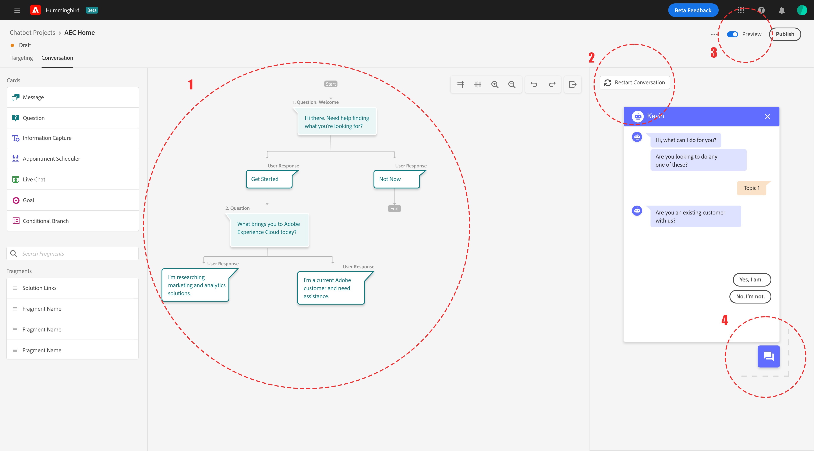

Adobe
Dynamic Chat
A modern solution to customer resolution
Dynamic chat is a new SaaS product from Adobe that allows customers/websites to engage with their visitors through a custom chatbot. Customers can take advantage of Marketo integration to more accurately target their audience.
Company: Adobe Duration: 7 months (Contract) Tools: Adobe XDPlatform: Website (mobile/desktop) Role: Research, wireframing, prototyping
The Product
Dynamic chat aims to solve an existing problem that many existing Marketo (An Adobe product that focuses on marketing) users face. Before October 2021, when Dynamic Chat launched, Marketo users had to outsource their chatbots which stripped them of the possibility of using the rich data that they already had in their Marketo consoles to effectively target leads and convert them. Dynamic Chat makes integration with Marketo easy for existing users and makes Marketo users readily available to their customers 24/7 through a simple chatbot.
My Role
During my time at Adobe, I was directly responsible for developing pre and post-GA features to address customer needs. My responsibilities included:
- High/low fidelity UI work
- Prototyping
- Competitive Analysis Research
- Collaboration with UX researchers to synthesize user interviews
- Prioritizing features with PMs and Developers
Feature Case study: Preview
Problem | Research
The MVP version of Dynamic Chat did not come with preview which meant that users would have to install the chatbot on their websites before being able to see what it looked like and before testing the custom conversations they had created. As dynamic chat was released to our beta customers, most users reported anxiety about committing to a chatbot that they could not test until implementation. This feature was heavily requested coming it at #3 most urgent feature in a survey from our users.
UI Execution
After proposing a few designs with other UX designers, engineering, and PMs I proposed two possible designs:
Prototype #1
Pros:
- Very clear and concise button vs the toggle from before
- Matches current patterns
Cons:
- User would have to constantly click back and forth
- Creates extra friction/wastes time
- There’s no real reason to hide the stream designer, users might want to reference something in the chat
Prototype #2
Pros:
- Users have options: can choose to show/hide preview: whatever is convenient
- Users can see both screens at the same time instead of clicking back and forth
Cons:
- It does not match any of our current patterns in the product
- It can take up too much of the canvas and be intrusive
Final Product
Due to time and business constraints, we were unable to effectively test this feature with users pre-release. This meant that the final product had to be created with scalability in the forefront.

Features: As of Feburary 2022, this feature is still in QA. Although no user testing was done do to business constraints before release we’re hoping to get some post-release testing done to asses the efficiencies and deficiencies of this feature for iterative purposes.
Upon release, we expect to:
Future | Testing